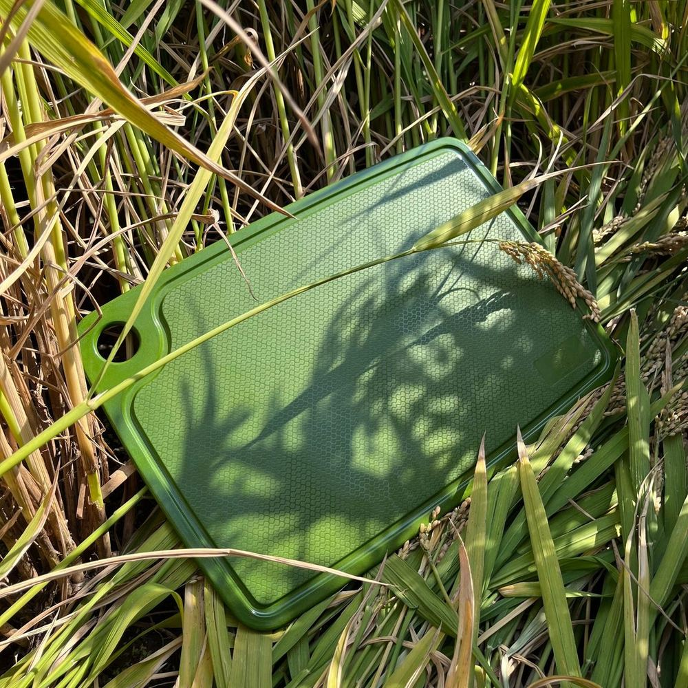
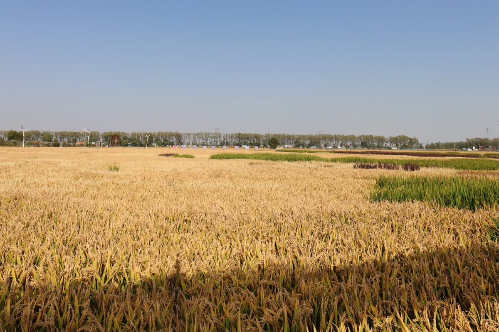
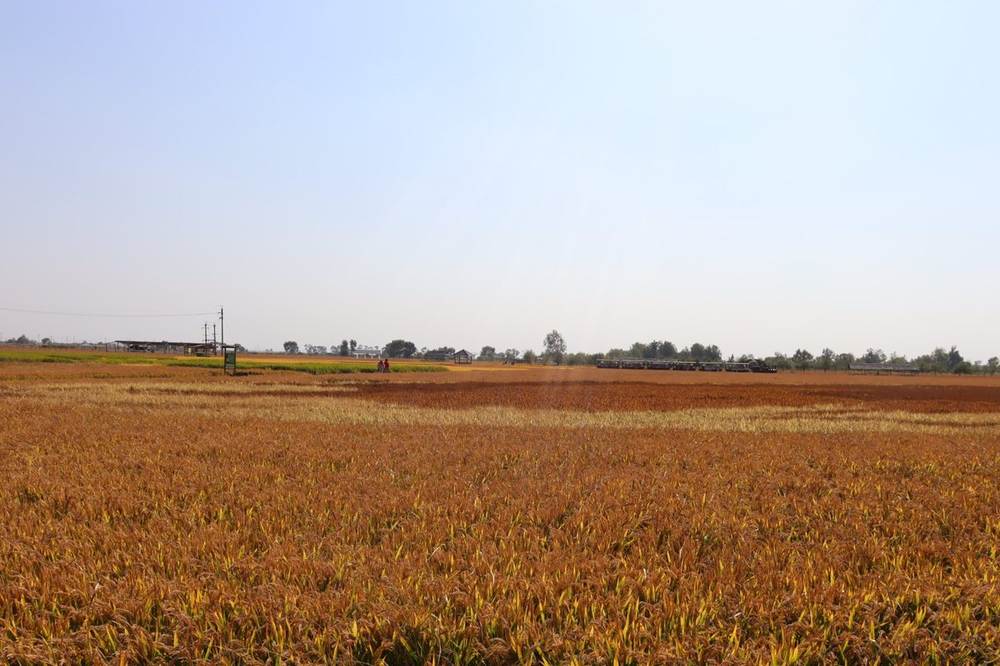
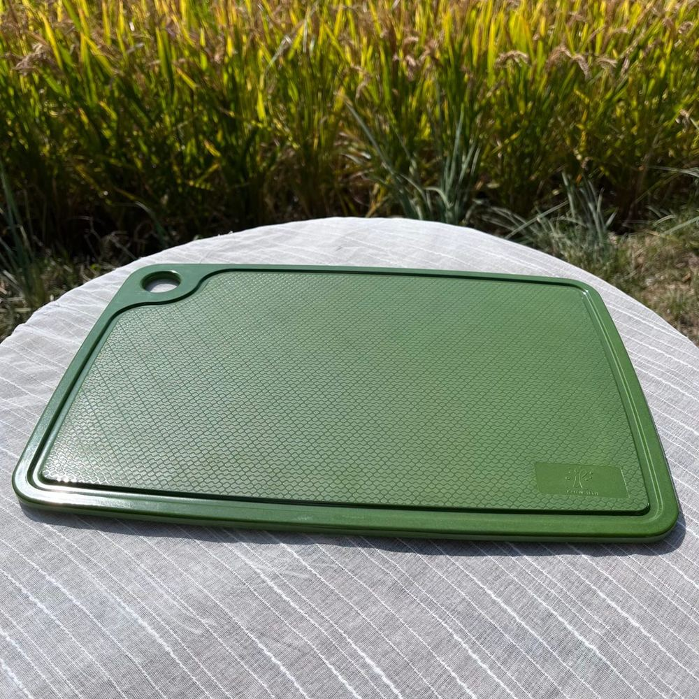
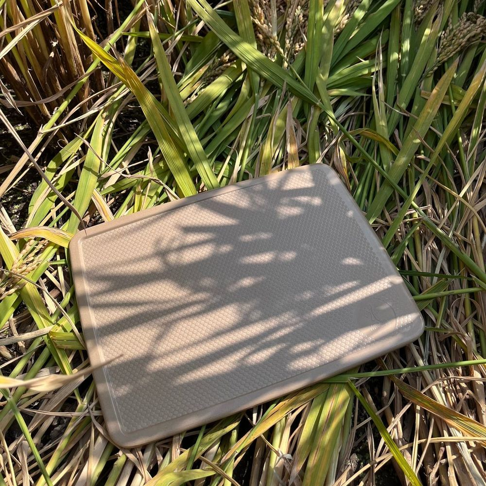
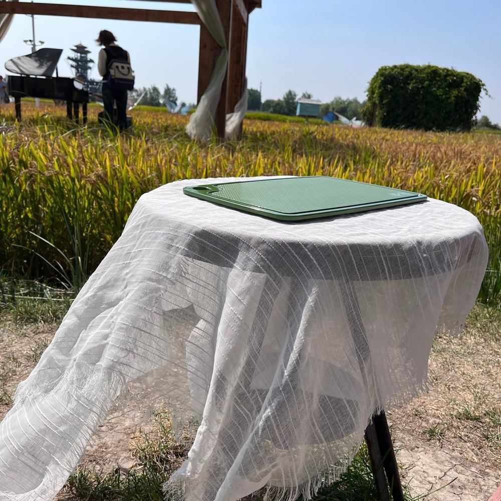

From Rice Harvest to Table: How Rice Husk Becomes Reusable Tableware
Right now, across northeast China, the rice harvest is in full swing. Combine harvesters are working the golden fields, and every ton of paddy rice that comes off them carries a quiet passenger: the husk. For most of history it was waste — burned or dumped. For us, it's the raw material that ends up as a chopping board on a catering line or a rice bowl in a family kitchen. This is the journey from field to table, photographed this harvest season, and why we think every eco tableware buyer should ask where their material actually comes from.

Where it begins: a rice husk chopping board back in the field it came from, this harvest season in northeast China.
The Season Behind the Product
October is harvest month in Liaoning. The fields turn from green to gold, the grain heads droop with weight, and the air in the countryside smells of dry straw. Rice is the staple crop here, and the region ships it across China and overseas. What many buyers never see is the scale of what's left behind: the husk — the hard, silica-rich outer layer of every grain — makes up roughly a fifth of the paddy's weight. Mill it and the husk separates off as a low-density, high-volume byproduct that the rice trade has historically struggled to dispose of. Burning it was the default for decades, which is precisely the problem plant fiber tableware helps solve: the husk becomes feedstock instead of smoke.

Harvest fields in northeast China, October 2026. The husk separated from this grain becomes next year's tableware.

Fields like this one run to the horizon. Multiply one husk by a region's harvest and the byproduct becomes an industry.
From Byproduct to Raw Material
Rice husk is an unglamorous material with excellent credentials. It's naturally rich in silica, which gives finished products stiffness and heat tolerance. It's dry, shelf-stable and easy to store in bulk — no cold chain, no spoilage race. And because it's an agricultural byproduct rather than a purpose-grown crop, using it doesn't compete with food production or forestry. The catch is consistency: husk varies by region, season and rice variety, so a serious manufacturer doesn't just buy whatever the nearest mill produces. It qualifies its supply, tests incoming material, and keeps recipes stable across harvest years — the same discipline a food company applies to ingredients. That discipline is invisible in the finished product, but it's the difference between tableware that performs identically order after order and tableware that quietly drifts in color or strength between shipments.
How Husk Becomes Tableware
The process from field to finished board runs through five stages:
1. Cleaning & milling. Raw husk arrives mixed with dust, straw fragments and grain residue. It's cleaned, then milled into a fine, uniform powder — the consistent particle size is what allows the next stage to produce dense, smooth surfaces instead of brittle, porous ones.
2. Formulation. The milled husk is blended with food-safe binders and color pigments into a homogeneous compound. This is the stage where a manufacturer's recipe discipline shows: the exact blend determines texture, food-contact performance, dishwasher endurance and the depth of color in finished pieces.
3. Hot-press molding. The compound is pressed in steel molds under heat and pressure — seconds per cycle — into the final shape. A chopping board, a bowl, a compartment tray: the mold defines it in one shot, with the edge detail and hanging hole formed in the same press rather than machined afterward.
4. Finishing & curing. Parts are trimmed, surface-finished and allowed to cure so the material reaches its full hardness. Colored lines and natural-tone lines run on the same principle — the color lives in the material itself, not in a coating that can chip off.
5. QC & testing. Finished pieces go through visual inspection and drop and dishwasher testing, and periodically through third-party food-contact testing. Products we ship come SGS tested for food contact, with reports available to buyers on request.

The honeycomb texture of a molded rice husk chopping board — color and pattern are in the material, not a coating.
Two Boards, One Origin
Our two chopping board lines show how far the same feedstock can stretch. The natural-tone board keeps the warm, husk-adjacent color that reads instantly as plant fiber on a retail shelf. The colored board line takes the identical material science and extends it into saturated colorways — sage green and beyond — for buyers whose customers want tableware that photographs like enamelware but ships and survives like fiber. Same field, same husk, two very different shelf stories. That's also the short version of what OEM/ODM means in practice: the material platform is fixed and proven; your logo, color and packaging make it yours.

The natural-tone board, back where its raw material grew. No dye, no coating — the color of the husk itself.
Why Traceability Matters When You Buy "Eco"
Eco tableware is a category where the story sells — which is exactly why the story gets borrowed. Plenty of trading companies photograph well and quote well, but can't tell you which fields, which season or which recipe stands behind the product in their catalog. If your brand is going to make a plant fiber claim on packaging or in a product listing, that claim is only as strong as the traceability behind it. A manufacturer with its own material chain can show you the raw material, the process and the test reports for the exact SKU you're buying. Our earlier guide on choosing a reliable eco tableware manufacturer covers the verification questions; the raw-material origin is the one buyers most often forget to ask.

This season's shoot: the finished board photographed in the same landscape its raw material came from.
A Buyer's Checklist: Raw Material Sourcing
✅ Ask where the plant fiber is sourced — a real manufacturer names the region and the byproduct stream
✅ Ask what binders are used and request food-contact migration test reports for the exact SKU
✅ Ask whether recipes are held stable across harvest seasons (this is why color drifts between orders at weak suppliers)
✅ Ask for process photos or a factory video — molding lines and QC benches are hard to fake
✅ Ask what happens to the product at end of life, and get the honest answer in writing
Frequently Asked Questions
How is rice husk tableware actually made?
Rice husk — the hard outer layer separated from the grain at milling — is cleaned and milled into a fine powder, blended with food-safe binders, then hot-pressed in steel molds into the final shape. The piece is finished, cured and tested before packing. The whole transformation happens with heat and pressure rather than carving, which is why intricate shapes like compartment trays can be molded efficiently at scale.
Does using rice husk compete with food production?
No — and this is one of the material's strongest sustainability arguments. The husk is a byproduct of rice milling: the grain is the food, the husk is what's left over. Using it as tableware feedstock displaces burning or landfilling, and it doesn't require planting anything extra or converting land. That's a materially different story from crops grown specifically for bioplastics.
Is rice husk tableware safe for direct food contact?
When it's made correctly, yes — but "made correctly" is the operative phrase, and it's the buyer's job to verify. Reputable manufacturers back their products with third-party food-contact migration testing for the exact SKU and recipe. Ours come SGS tested for food contact, and we provide the reports on request. If a supplier can't produce a test report for the specific product you're buying, treat that as your answer.
Why does color vary between some suppliers' shipments?
Because the raw material varies by region, season and rice variety — and suppliers who buy husk ad hoc from whatever mill is cheapest inherit that variation. A manufacturer that qualifies its supply and holds its recipe stable can keep color consistent across harvest years and across orders. If consistent color matters for your line, ask the supplier directly how they control it before you place a reorder-based program.
Want your tableware to carry a story you can prove?
We're the manufacturer at the end of this field-to-table chain — 5,000 m² facility, OEM/ODM logo and color customization, SGS tested products, and the supply chain documentation to back your eco claims. Ask us for samples and the reports.
Send InquiryPublished by Kaixin Eco Team · Shenyang Kaixin Technology Co., Ltd. — eco-friendly rice husk (plant fiber) dinnerware manufacturer since 2016, shipping to 40+ countries with full OEM/ODM support. New to the material? Start with What Is Rice Husk Tableware, or browse the full product range from the Kaixin homepage.